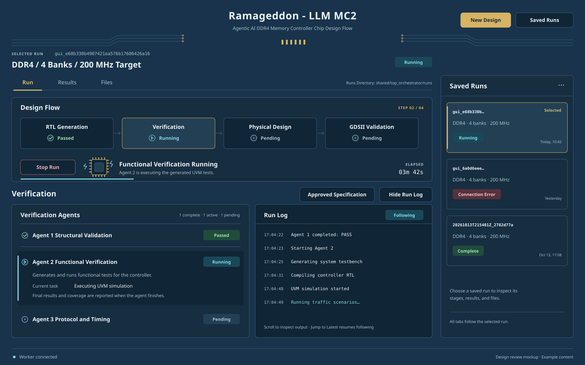

Open full-size vector draft
A · Blueprint + Brass
The closest evolution of today's interface. Navy panels, restrained brass contact details, cyan activity, and thin gold navigation accents. Recommended starting point.
B · Precision Console
Sharper corners, numbered stages, stronger horizontal rules, and a gold instrument-panel header. More technical and dense; risks feeling severe.
C · Engineering Studio
Brighter slate panels, softer corners, and warmer gold. Feels more approachable; less like a traditional EDA tool.
Recommendation: A's palette and PCB details, C's softer panel treatment, and B's numbered stages. Keep gold for structure and actions, cyan for running, green for success, and orange plus explicit text for required user input.
Implementation direction: Qt layouts and vector icons, a restrained type scale, optional licensed bundled fonts, keyboard-visible focus, and explicit 100/150/200% scaling checks. These drafts show intended appearance, not validated Linux, WSLg, or macOS rendering. No working GUI behavior has changed.